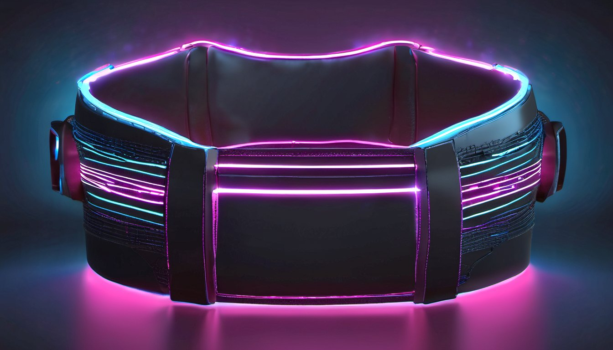
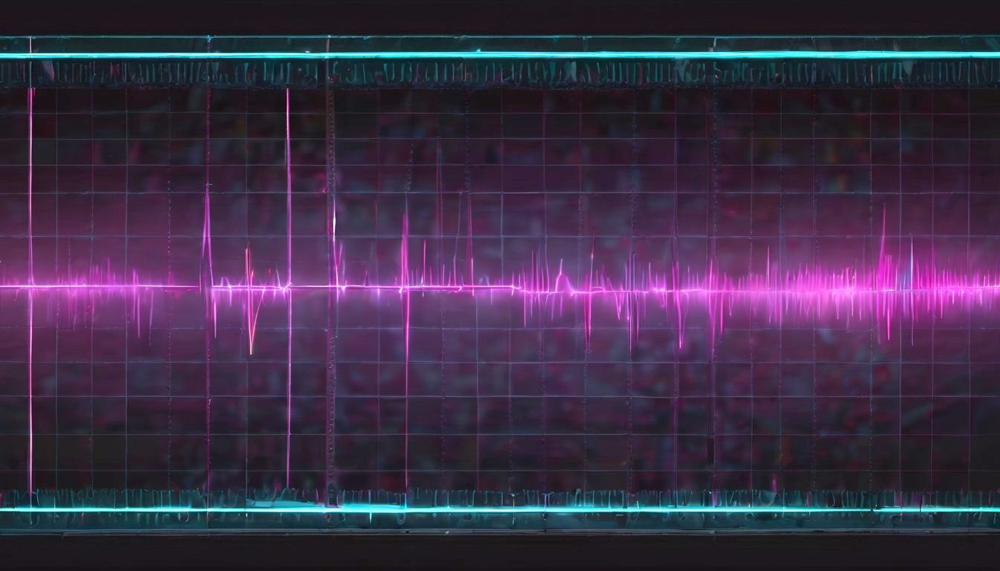

NeuroExoAI — le harnais temps réel
Le harnais écoute le cerveau et les muscles, l'intelligence artificielle décide, la machine assiste. À chaque instant, une boucle se referme — et c'est cette boucle qui rééduque la marche, pas à pas, séance après séance.

Le harnais écoute
Des capteurs posés sur la tête lisent l'intention de mouvement, et des capteurs sur les jambes lisent les micro-signaux que le muscle envoie encore, même quand le mouvement ne passe plus. Rien n'est deviné : tout est mesuré.
L'IA assiste au bon moment
L'intelligence artificielle croise ces deux informations en temps réel : elle comprend ce que vous voulez faire et ce que le muscle peut encore donner. Elle assiste alors le mouvement, et stimule électriquement les muscles au bon moment — ni trop tôt, ni trop fort.

La boucle Cerveau → Muscle → Exo-Robot → Cerveau
Cerveau : l'intention. Muscle : la réponse. Exo-Robot : l'assistance. Et retour au cerveau, qui apprend. Chaque pas réussi renforce le suivant : c'est ainsi qu'une marche se rééduque, pas à pas, séance après séance. Et si le programme s'arrête, la machine se fige — la sécurité ne dépend pas du logiciel.
La boucle Cerveau → Muscle → Exo-Robot → Cerveau
Journal build-in-public
- Architecture Système 1 arrêtée : deux horloges, une seule frontière, aucun modèle dans la boucle de commande.
- Règles de sécurité isolées du transport : elles se testent sans portique ni alimentation.
- Décision : le jumeau numérique avant l'usinage, pour ne pas payer chaque erreur en métal.